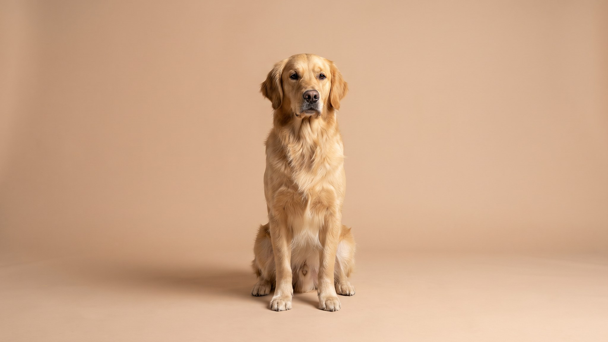

После вскрытия пачки сухой корм для собак контактирует с воздухом и влагой каждый раз, когда владелец набирает порцию. Заводская упаковка помогает сохранить продукт и данные о партии, поэтому высыпать гранулы в контейнер не требуется. Ниже описаны место хранения, порядок закрытия пачки, срок по маркировке и чек-лист частых ошибок.
🐾 Соберите рацион под свою собаку
AnimaLife учитывает породу, возраст, вес и образ жизни и подсказывает, сколько и чем кормить. Плюс напоминания о кормлении и контроль веса.
Собрать рацион → Собрать в MAX →
У вас iPhone? AnimaLife есть в App Store
Внутренний слой упаковки защищает гранулы от воздуха и света. На пакете также остаются срок годности, номер партии, состав и рекомендации производителя для открытого продукта. Эти сведения пригодятся, если у корма изменится запах или возникнет вопрос о конкретной партии.
Сложите открытый край пакета несколько раз, выпуская лишний воздух, и зафиксируйте широкой прищепкой. Всю упаковку поставьте в чистый контейнер с плотной крышкой. Контейнер служит дополнительной защитой от домашних животных и случайной влаги. Гранулы остаются внутри родной упаковки.
Выберите шкаф в сухой части кухни или кладовой, вдали от плиты, батареи и солнечного подоконника. Не ставьте пакет на пол рядом с местом мытья посуды. Балкон и гараж зимой дают перепады температуры, а при переносе холодного корма в тёплую комнату на поверхности может появиться конденсат.
Перед началом прочитайте на упаковке срок использования после вскрытия. Универсального числа для всех продуктов нет. Отметьте дату открытия на малярном скотче и приклейте её к пакету, не закрывая заводскую маркировку. Объём новой пачки выбирайте с учётом того, сколько корма собака съедает за этот период.
Каждое открытие занимает меньше минуты, если всё лежит рядом. Не оставляйте мерный стакан внутри пачки: на нём остаются частицы корма, а рука каждый раз касается большего количества гранул. Для нескольких животных заведите отдельные ёмкости и подпишите их.
Перед покупкой новой пачки осмотрите место хранения. Если контейнер использовался с прошлым продуктом, достаньте упаковку, вымойте ёмкость и полностью высушите её. Крышку и защёлки проверьте отдельно. Новый пакет ставьте только в сухой контейнер.
Ошибкой будет постоянно подсыпать новый корм поверх старого. Нижние гранулы тогда остаются в контейнере неделями, а отследить их срок уже трудно. Также не храните пакет рядом с бытовой химией: сильные посторонние запахи усложняют оценку состояния продукта.
При появлении плесени, насекомых, влажных комков или резкого прогорклого запаха уберите корм из миски и прекратите кормление этой партией. Сохраните упаковку для обращения к продавцу или производителю. Не пытайтесь отсортировать подозрительные гранулы вручную. Если собака уже поела такой корм и её состояние изменилось, обратитесь к ветеринару.
🐾 Не уверены, что рацион подходит?
Напишите в AnimaLife, чем кормите, — приложение покажет, чего не хватает, и рассчитает порцию под вес, возраст и активность. Бесплатно.
Проверить рацион → Проверить в MAX →
У вас iPhone? AnimaLife есть в App Store
🐾 Понравился разбор?
Подпишитесь на канал — каждый день разбираем по одному тревожному симптому у кошек и собак: что в пределах нормы, а когда пора к врачу. Подпишитесь, чтобы не пропустить разбор, который может спасти здоровье вашего питомца.
Материал носит информационный характер и не заменяет очную консультацию ветеринара.